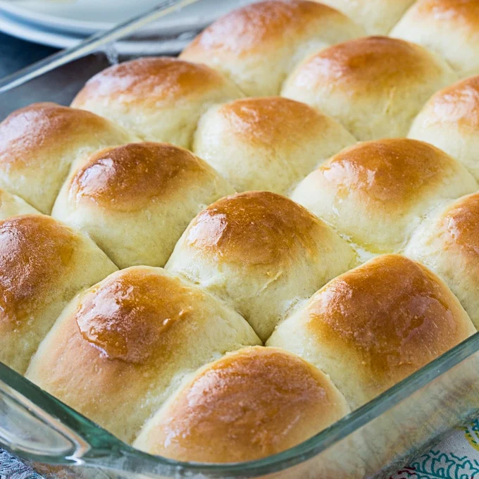

Grandma's Old Fashion Yeast Rolls

Description
Let the truth be known: my grandmother has never made rolls for me before.
Sorry to let that truth bomb loose, but it had to be said. In fact, most recipes
must straight up lie. No way old granny goes, "I call these Grandma's Overcooked Ham."
But here we are, telling lies. You wouldn't have clicked if it was just called
"Yeast Rolls." That, for some reason, sounds disgusting. But throw in Old-Fashioned
and bring up your grandmother: poof, I got your click.
Anyways, here's what you'll need:
Ingredients
- 2 and a half cups of warm water
- 1 and a half tablespoons of active dry yeast
- 1 tablespoon of salt. Exactly, this is crucial!
- 3/4 cups of shortening (try using Crisco)
- 7 cups of all-purpose flour, divided, or more as needed
- 1/2 cup of butter, melted
- A grandmother
Steps
- Dissolve yeast in warm water in the bowl of a stand mixer fitted with the dough hook.
Stir in sugar and salt until you see foam rising. Add 3 cups flour and 3/4 cup shortening;
mix with the dough hook until the mixture is the consistency of a thick pancake batter.
- Fill a pot with hot (NOT BOILING) water.
- Remove the mixer bowl and cover it with plastic wrap and a towel. Place the bowl
over the pot of hot water, making sure the bottom does not touch the water. Let rise until doubled
in size, 45 minutes to 1 hour.
- Place the bowl back on your stand mixer and gradually mix in remaining 4 cups flour until
dough is smooth and elastic; you may need to add up to 1 additional cup.
- Heavily grease two 9x13-inch pans with shortening.
- Divide dough into 24 balls. Place 12 balls into each of the prepared pans; cover with plastic wrap and a towl.
Let rise in a warm area until doubled in size, about 1 hour;
balls will start out at about 1 1/2 inches in diameter but will rise and touch the sides of the pans.
- Preheat the oven to 375 degrees F (190 degrees C).
- Bake rolls in the preheated oven until golden brown on top, 25 to 30 minutes.
Remove from the oven and brush melted butter over top.
- Enjoy!